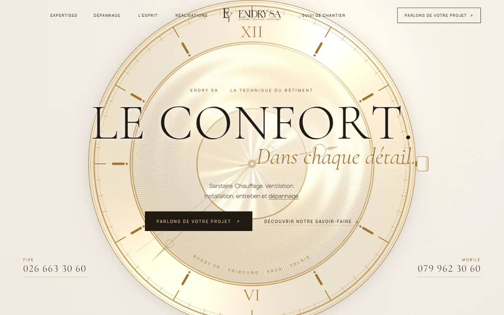
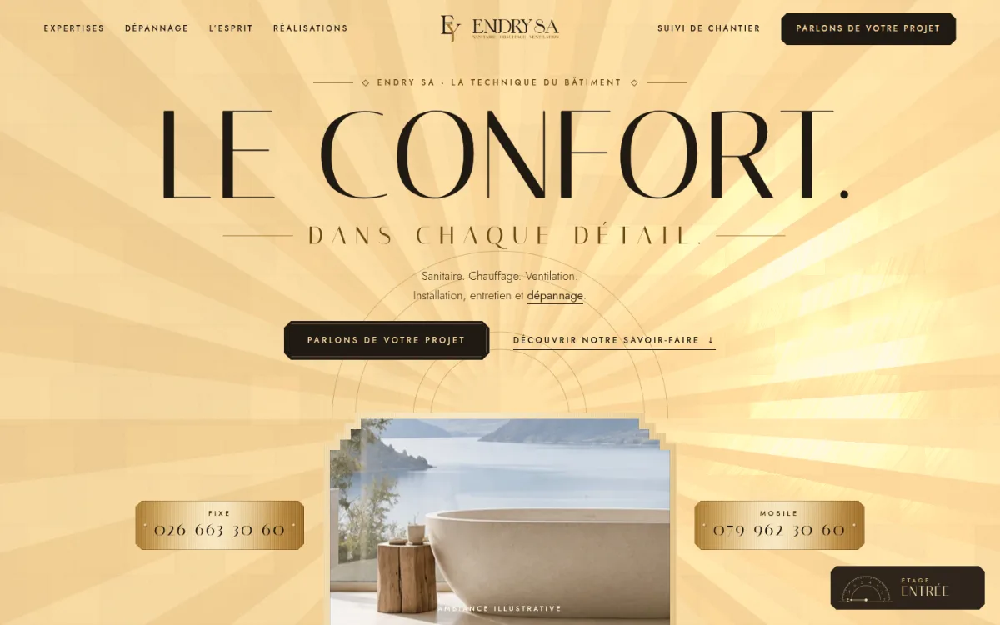
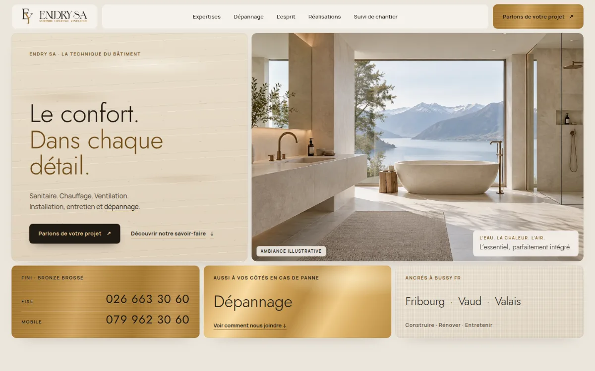
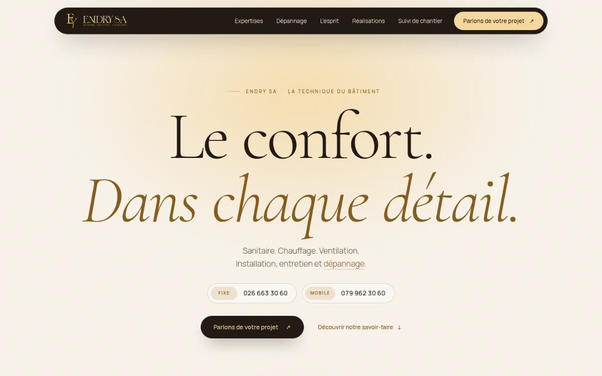

Direction artistique · Maquettes XIII à XVI
Quatre nouvelles écritures.
Une même maison.
Le contenu, les coordonnées et le fonctionnement du site restent identiques. Chaque maquette est animée (défilement fluide, séquences épinglées, WebGL) et reste complète sans animation. Ces maquettes XIII à XVI prolongent la série I à XII sans en reprendre les directions. Chacune propose une mise en scène différente de l’identité Endry SA : or clair, bronze et brun du logo, calme, précision et chaleur.
- Or clair
#F9DBA3 - Bronze
#9F722A - Brun
#211A13
-

Manufacture
La haute horlogerie suisse.
On remonte la couronne : le cadran s’assemble et s’ouvre sur le héros. Guilloché métallique en WebGL dont le reflet suit le pointeur, métiers en complications sur un cadran qui tourne au défilement, rouages de la méthode, curseur loupe d’horloger.
Ouvrir la maquette -

Palace
Le lobby d’un grand hôtel Art déco.
Des portes d’ascenseur en laiton s’ouvrent sur un soleil en feuille d’or (WebGL) dont le reflet suit le pointeur. Les métiers se découvrent porte après porte, la méthode monte d’étage en étage, un indicateur d’étage suit la page.
Ouvrir la maquette -

Matière
Un showroom de matériaux nobles.
Les échantillons tombent et s’assemblent en grille. Bronze, laiton et travertin éclairés en temps réel comme sous une lampe qu’on déplace, métiers qui changent de matière au défilement, réalisations qui se recomposent.
Ouvrir la maquette -

Thermes
Des bains alpins en fin de journée.
Une goutte dorée tombe dans le bassin. Le héros se voit à travers l’eau (ondes au pointeur, caustiques, vapeur), l’arche s’ouvre en plein écran, les trois bassins se traversent à l’horizontale et la méthode se remplit.
Ouvrir la maquette
Ce qui ne change pas
- Logo d’origine, jamais redessiné : or clair sur fonds sombres, version encre brun et bronze sur fonds clairs.
- Textes, téléphones (026 663 30 60 · 079 962 30 60), dépannage, FAQ et formulaire repris à l’identique.
- Polices auto-hébergées : aucune requête vers un service tiers.
- Accès privé pour revue : pages non indexées.